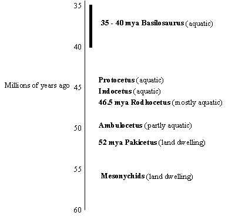
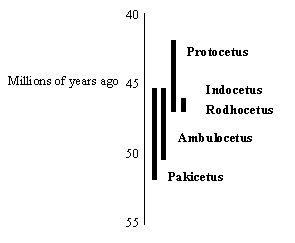

| Feature Article - August 1999 |
| by Do-While Jones |
| Mesonychids that lived near rivers or at the edge of the sea waded into the water to catch fish. They found it easier to fish than to hunt on land. And safer, too. The big, dangerous animals that liked to hunt mesonychids could not swim. We can picture a mesonychid wading in shallow water, then going deeper to chase its prey. |
It is a fairy tale! But it is presented as fact, and evolutionists intend children to believe it is true.
 |
According to the traditional fairy tale illustrated at the left, whales evolved from extinct wolf-like land-dwelling animals called mesonychids. One of these mesonychids evolved into Pakicetus, which evolved into the partly aquatic Ambulocetus, which became the mostly aquatic Rodhocetus, which evolved in one or more steps into the entirely aquatic Basilosaurus which was direct ancestor of modern whales. These fossils were arranged in a nice neat sequence that seemed to show evolution.
This was accepted for years, but in scientific circles today this view of whale evolution is controversial. There are nine major problems with the whale fairy tale. What are these nine problems? We are so glad you asked! |
|
George Simpson led the greater part of his professional life pursuing problems in mammalian evolution at the American Museum of Natural History. It was Simpson's goal, in the late 1930's, to put together newly emerging ideas on the genetics of the evolutionary process with the large-scale patterns
of evolution revealed by the fossil record. And the sort of evolutionary pattern provided by whales intrigued him deeply. Rather than blaming gaps in the fossil record for the absence of intermediate, transitional forms between the terrestrial ancestor and the Eocene whales, Simpson saw quite another message:
Simpson realized that the fossil record of whales had something important to say about the very nature of the evolutionary process. He calculated that, if one took the conventional Darwinian position-i.e. that evolution is generally even-handed, steady, slow, gradual, and progressive-and applied it to a case like
the whales, the results were absurd. One can measure the average rate of evolution for various anatomical features, in the 50 million years it took to modify Eocene whales into fully modern forms. Let us then take that measured rate of evolution within whales and calculate how long it would have taken
for Eocene whales to evolve from terrestrial ancestors. Extrapolating back, it would have taken at least 100 million years (possibly even considerably more) for the transition from terrestrial ancestor to aquatic, primitive whale descendant to have occurred-assuming, that is, that whales evolved from terrestrial ancestors
at the same rate of evolution we see in the 50 million years that elapsed between Eocene and modern whales.
Patently absurd, Simpson realized. One hundred million years prior to the Eocene puts us back into the Middle Mesozoic, long before true mammals show up as small, very primitive terrestrial creatures ... 1 [italics in the original] |
It is ironic that we are writing this essay in response to a claim that whale evolution provides an excellent example of transitional forms, and evolutionists like Simpson and Eldredge are concerned about "the absence of intermediate, transitional forms between the terrestrial ancestor and the Eocene whales". We will simply bring that to your attention and pass on to the issue that Simpson is really concerned about.
Let us try to explain the problem in simpler terms. Simpson believes that Pakicetus lived 52 million years ago, and modern whales evolved about 2 million years ago, so it took about 50 million years for Pakicetus to evolve into a modern whale. The differences in shape between Pakicetus and modern whales is only half as great as the differences in shape between Pakicetus and Simpson's unspecified, imaginary land-dwelling ancestor. Since the differences between the imaginary ancestor and Pakicetus are at least twice as great as the differences between Pakicetus and modern whales, the time required for all this evolution to take place should be twice as long as 50 million years. Therefore, it should have taken 100 million years, not 10 million years, for the evolution from the imaginary land-dwelling ancestor to Pakicetus. Their dates of the fossils aren't consistent with their calculated rates of evolution (which are based on their own estimated dates). The numbers don't compute, and they have known it for 60 years.
|
The generally accepted order of the archaeocete species, in terms of both morphological (primitive to advanced) and stratigraphical (lower/older to higher/younger) criteria, is Pakicetus, Ambulocetus, Rodhocetus, Indocetus, Protocetus, and Basilosaurus. One problem for this tidy picture is that the stratigraphical relationships of most of these fossils are uncertain.
In the standard scheme, Pakicetus inachus is dated to the late Ypresian [Ypresian is 50 to 55 million years ago], but several experts acknowledge that it may date to the early Lutetian [Lutetian is 42 to 50 MYA]. If the younger date (early Lutetian) is accepted, then Pakicetus is nearly, if not actually, contemporaneous with Rodhocetus, an early Lutetian fossil from another formation in Pakistan. Moreover, the date of Ambulocetus, which was found in the same formation as Pakicetus but 120 meters higher, would have to be adjusted upward the same amount as Pakicetus. This would make Ambulocetus younger than Rodhocetus and possibly younger than Indocetus and even Protocetus. In the standard scheme, Protocetus is dated to the middle Lutetian, but some experts have dated it in the early Lutetian. If the older date (early Lutetian) is accepted, then Protocetus is contemporaneous with Rodhocetus and Indocetus. In that case, what is believed to have been a fully marine archaeocete was already on the scene at or near the time archaeocetes first appear in the fossil record. ... Based on the foregoing, it is reasonable to believe, even from within an evolutionist framework, that all the early archaeocetes were essentially contemporaries. 2 |
| That was pretty hard to follow. Let us draw you a picture of what he said.
All the creatures in the diagram at the right appear in the fossil record at the roughly same time. There isn't any proof that one evolved into the other. They could just as easily have been separate species that had some coincidental similarities that evolutionists mistook for evidence of evolution. If they did evolve, then they had to have done it very, very quickly. So, not only is there a time problem between whatever came before Pakicetus to Pakicetus, there is a time problem from Pakicetus to Protocetus. |
 |
| The only sensible conclusion, Simpson realized, is that evolution, especially episodes of large-scale, truly macroevolution, must occur much more rapidly than the gentler pace of typical evolutionary transformation that takes place after a group becomes well established. 3 [italics in the original] |
We respectfully suggest that a more sensible conclusion is that macroevolution doesn't happen at all. But the idea that evolution happens in short, rapid bursts rather than a long, steady process is accepted by some evolutionists, and has been called the "punctuated equilibrium" model of evolution.
| This idea [punctuated equilibrium] is only testable in organisms with a dense fossil record, and (as Zimmer acknowledges) the remains of early tetrapods and whales are much too rare to infer whether they evolved in a gradualistic or punctuationist pattern. 4 |
Since whales are mammals, evolutionists imagined that a land-going mammal must have returned to the sea. At first, they imagined this without any fossil evidence. So, they went looking for fossils to support their preconceived ideas.
|
The first hint that they were probably right came in 1983, when researcher Phil Gingerich found a 52-million year old skull in shallow deposits in Pakistan. Although fragmentary, the skull had teeth that were nearly identical with those of Mesonychids and the Archaeocetes.
... Despite the whale-like characteristics of the skull, however, Pakicetus lacked two important adaptations which are present in modern whales. In living whales, the ears contain large sinuses that can be filled with blood, allowing the animal to maintain pressure while diving. Modern whales also transmit sound vibrations to the inner ear using a "fat pad", which allows them to hear directionally underwater. Pakicetus lacked both of these features, indicating that it was unable to dive deeply and that it could not hear well underwater. These anatomical clues meshed well with its habitat, since the Pakicetus bones were found in deposits that had been laid down at the mouth of a river on the shore of a shallow sea, where the opportunities for deep diving would be limited. Although no post-cranial bones of Pakicetus were found, it seemed logical to assume, from the teeth and ear structure, that the animal spent a great deal of time in shallow water looking for food, but returned to the land to rest, somewhat like a modern sea lion. ... The earliest known cetacean, Pakicetus, demonstrates a mixture of traits which are unique to the terrestrial Mesonychids as well as marine whales, and indicates that the cetaceans are descended from the Mesonychid carnivores. Although we have not found any post-cranial bones from Pakicetus yet, ... 5 |
Consider what this evolutionist has just told us. First, they haven't found any post-cranial bones of Pakicetus. [Since this essay was written, they have found some post-cranial bones.] Post-cranial bones are bones below the skull. So, all they have found is a skull. They don't have a single Pakicetus rib. They don't have any Pakicetus vertebrae. No other bones of any kind. Just a skull--and a fragmentary one at that. Why do they think it came from a whale ancestor? Because its teeth look like whale teeth.
But when they look at the ear bones, there is nothing to indicate that it could hear underwater. The skull was found in association with other fossils that lived on the bank of a river or along the sea shore. Yet it "demonstrates a mixture of traits which are unique to the terrestrial Mesonychids as well as marine whales, and indicates that the cetaceans [whales] are descended from the Mesonychid carnivores."
Pakicetus gets its name from its discovery in Pakistan. Except for Basilosaurus, all the other supposed links in this evolutionary chain are found in that part of the world. But then, out of the blue, Basilosaurus appears in Louisiana!
| Basilosaurus is one of the most common of the primitive whales, called "archaeocetes" by paleontologists, that have found in exposures of Middle to Upper Eocene, 35 to 40 million year old, marine sediments within central Louisiana. The species of Basilosaurus found in Louisiana, Basilosaurus cetoides (Owen), had a streamlined body that averaged 45 to 70 feet in length. Its body looked more like the body of a mythical sea serpent rather then the body of a modern whale. ... The bones of Basilosaurus cetoides (Owen) and other primitive whales have been found throughout a belt across Louisiana, Mississippi, and Alabama ... 6 |
So, this critter looked like a "mythical sea serpent". This is yet another instance of a sighting of a "mythical" creature that looks just like a creature that really existed, but evolutionists claim has been extinct for 35 million years. Last October we discussed other modern sightings of "prehistoric" animals that call the evolutionists' time scale into question, so let's not go there again. Let's get back to Basilosaurus and the other archaeocetes.
| Later, these primitive whales gave rise to toothless and toothed whales. In case of the toothed whales, the teeth evolved into the teeth of the toothed whales, e.g. the dolphins, killer whales, and sperm whales. The Baleen (toothless) whales, the other branch of whales, developed modified mouth structures that strained plankton from the seawater enabling them to graze the oceans. 7 |
Remember that the Pakicetus was deemed to be an ancestor to the modern whale primarily because it had the same kind of teeth as Basilosaurus. Similarity of teeth is supposed to be the proof that Basilosaurus evolved from Pakicetus, despite the fact that Basilosaurus lived in Louisiana and Pakicetus lived in Pakistan. Geography apparently doesn't matter much to evolutionists. All that matters is that they had the same shaped teeth, which is evidence of evolution.
Evolutionists bend the rules any time they like. Similar teeth is evidence that they evolved from a common ancestor. Different teeth is evidence that they evolved from a common ancestor. It is a case of "Evolved if they do--evolved if they don't." Their argument as to whether or not similar teeth prove evolution is contradictory, which is the fifth problem.
|
Toothed whales (Odontocetes) have echolocation (ultrasonic sonar). This involves generating a high-frequency clicking sound from the nasal passage, beaming the sound through the melon in the forehead, and then receiving the echo of the high frequency sound from the environment. Echolocation and high-frequency hearing are crucial for sensory perception in toothed whales. Greater sensitivity to high ("ultrasonic") frequencies enables toothed whales to echolocate and to obtain an accurate acoustic perception of the underwater environment. As a part of this functional adaptation, numerous structural specializations are developed in the inner ear and in the petrosal bone containing the inner ear.
By contrast, baleen whales (Mysticetes) have no echolocation but can hear very low-frequency sounds. Low frequency sound has greater penetrating power underwater and wider scatter, allowing the baleen whales to communicate over long distances and wider geographic areas. 8 |
Let's consider what this means. Evolutionists have told us that Pakicetus couldn't even hear under water. But toothed whales (and dolphins, etc.) have ultrasonic sonar just like another mammal--the bat. Why don't evolutionists claim that whales evolved from bats? Is it because bat teeth don't look like whale teeth? Is it any more ridiculous to think that a bat could evolve into a whale than to think that a wolf could? What makes teeth so much more important than ears when trying to figure out which animals had common ancestors?
The answer is that evolutionists just pick whatever characteristic tends to support their case and use it. If the number of vertebrae supports their supposed evolutionary story, then the number of vertebrae is important. If the number of vertebrae doesn't--then vertebrae aren't important. It is entirely subjective. That's why DNA analysis is so appealing. DNA analysis is quantitative. You can count the number of differences in DNA. The problem is, DNA doesn't tell them what they want to hear. A case in point is the whale, but we will get to that a little later.
Right now we want to emphasize the sixth problem that plagues evolutionists, which is that there isn't a clue as to how and when toothed whales developed echolocation. Presumably it must have happened very recently, after toothed and toothless whales diverged, which must have been less than 35 million years ago if both evolved from Basilosaurus. Echolocation seems like a very sophisticated adaptation to have evolved in such a short time.
True Tales of WhalesScientists believe that early whales actually walked the earth. The theory, supported by recent fossil finds in the foothills of the Himalayas, is that about 53.5 million years ago, whales were amphibious. They originated as land mammals, and gradually ventured into the water in search of food. They fed on fresh and saltwater fish. Eventually, they lost their legs and nostrils, and became the creatures we know today.The name of the early species is Himalayacetus subathuensis. 9 |
Sounds like good news for evolutionists. On the contrary, it kicks their theory in the (whale's) teeth, so to speak. Here is some more important information about Himalayacetus they failed to mention.
|
Paleontologists have unveiled the fossilized lower jaw of an ancient whale from India that, they claim, pushes the origin of these marine mammals back before 53.5 million years ago, earlier than previously thought. This primitive species provides new information on the profound evolutionary transformation that turned a group of four-legged land mammals into modern cetaceans--the whales, dolphins, and porpoises inhabiting the ocean today--say the researchers.
... Bajpai and Gingerich dated Himalayacetus using the shells of one species of tiny marine organisms called foraminifera, found in the same rock formation. The species of foraminifera suggests that the whale lived during the early Eocene epoch, whereas Pakicetus fossils have come from middle Eocene rocks. ... If Bajpai and Gingerich are correct about Himalayacetus, the Indian fossil would shift ideas about when whales invaded the oceans, says paleontologist Mark D. Uhen of the Cranbrook Institute of Science in Bloomfield Hills, Mich. Paleontologists believe that Pakicetus and other early cetaceans were furry, four-legged creatures that lived mostly on land, venturing into the water to feed on fish. According to current thinking, the earliest whales hunted in rivers and were unable to feed in salt water. Indeed, Pakicetus is found in river sediments, and the mixture of oxygen isotopes in its bones suggests it swam in fresh water. The Indian fossil, however, came from marine sediments containing oysters and other ocean species, indicating that Himalayacetus swam in salt water. The ratio of oxygen isotopes in its bones supports this interpretation. 10 |
If true, Himalayacetus completely throws out the evolutionists' claimed sequence of transitional fossils that show how a land-dwelling mammal (Pakicetus) that occasionally ventured into fresh water turned into a mammal that swims in salt water all the time. If Himalayacetus was swimming in salt water 1 million years before Pakicetus, then Pakicetus and the supposed transitional forms have nothing at all to do with whale evolution. Himalayacetus would be a fully formed, abrupt appearance of a salt water whale, throwing cold (salt) water on the theory of whale evolution.
We should point out that Himalayacetus was found in 1986, but went unreported until 1998. Why? Probably because of what we just told you in the previous paragraph. It is devastating to the theory of evolution. So, naturally, it had to be suppressed. But now that DNA evidence has made the old whale tale less credible, scientists are more open to new data about whale evolution.
We should also point out that the fossil is only a lower jaw. It isn't even a complete skull. But evolutionists claim that they can reconstruct entire animals from jaws and teeth. It is no different from Austribosphenos nyktos, the "oldest Australian placental mammal" that was reconstructed from a 5-inch jaw fragment we told you about in our December 1997 newsletter. Himalayacetus is no different from Homo heidelbergensis (a supposed ape-man), which is known from two teeth and a part of a leg bone found in Boxgrove, England, a lower jaw found near Heidelberg, Germany, and a skull from Bodo, Ethiopia. Fragmentary fossils are commonly accepted by evolutionists if they support their pet theory. We think they err by coming to vast conclusions from such half-vast fossils.
For years, evolutionists have claimed that whales evolved from something like a wolf. But when they analyzed the DNA, whale DNA was closer to hippo DNA than wolf DNA.
| The origin of whales and their transition from terrestrial life to a fully aquatic existence has been studied in depth. Palaeontological, morphological and molecular studies suggest that the order Cetacea (whales, dolphins, porpoises) is more closely related to the order Artiodactyla (even-toed ungulates, including cows, camels and pigs) than to other ungulate orders. The traditional view that the order Artiodactyla is monophyletic has been challenged by molecular analyses of variations in mitochondrial and nuclear DNA. We have characterized two families of short interspersed elements (SINEs) that were present exclusively in the genomes of whales, ruminants and hippopotamuses, but not in those of camels and pigs. We made an extensive survey of retropositional events that might have occurred during the divergence of whales and even-toed ungulates. We have characterized nine retropositional events of a SINE unit, each of which provides phylogenetic resolution of the relationships among whales, ruminants, hippopotamuses and pigs. Our data provide evidence that whales, ruminants and hippopotamuses form a monophyletic group. 11 |
In other words, the DNA analysis contradicts the story that evolutionists have told for so long.
|
There are two main hypotheses for the relationships of the mammalian order Cetacea (comprising whales, dolphins and porpoises). The first hypothesis, mainly supported by DNA sequence data, is that one of the groups of artiodactyls (for example, the hippopotamids) is the closest extant relative of whales and that Artiodactyla are paraphyletic if Cetacea are excluded from it. The second hypothesis, mainly supported by palaeontological data, identifies mesonychians, a group of extinct archaic ungulates, as the sister group to whales. ...
The morphology [shape] of the ankle can be used to evaluate these hypotheses. Ankle specializations are universally used to characterize Artiodactyla, and would provide an excellent test for the inclusion of whales in that order. Unfortunately, the few cetacean ankle bones known are too incomplete or too reduced to allow meaningful comparison with other mammals. 12 |
We are back to the Third Problem--there really aren't very many fossils. But, after saying that there is too little data to analyze, and that no meaningful comparison can be made, they tell how they analyzed the data and made a comparison. They came to the following conclusion.
| Our new ankle data do not unambiguously support either of the predominant hypotheses of cetacean relationships. 13 |
As Dilbert once said to Wally, "I admire your ability to get paid for that." Really. It takes a lot of skill to do an in-depth analysis of insufficient data, come up with a non-conclusion, get it published in a prestigious journal like Nature, and get funding for the research.
Whale expert J.G.M. Thewissen discovered two ancient whale "ankle bones", and came to this conclusion:
| In the October 1, 1998, issue of Nature, J.G.M. Thewissen, a paleontologist at the Northeastern Ohio University College of Medicine, and his colleagues announced their discovery of two ancient whale astragali [ankle bones] ... "Our whale astragalus doesn't look like an artiodactyl," Thewissen observes. "Unfortunately, it also doesn't look like a mesonychian." 14 |
CETACEAN CREATIONNew fossils leave researchers wondering where whales come from From four-legged landlubbers to streamlined ocean dwellers, whales represent one of the most dramatic evolutionary transformations. But what their terrestrial ancestors were and how whales are related to other living mammals have eluded scholars for over a century. Paleontologists have long held that whales are most closely related to extinct, wolflike creatures called mesonychians, based on striking dental similarities. A few years ago, however, molecular biologists weighed in with DNA data suggesting that whales are actually highly specialized artiodactyls (the group that includes hippopotamuses, camels, pigs and ruminants) and are closer to one of those living subgroups than mesonychians. Now key fossils-50-million-year-old whale ankle bones from Pakistan-have been unearthed. But instead of shedding light on whale origins as expected, they have left researchers even more puzzled than before. ... He [University of Michigan paleontologist William J. Sanders] points out that the earliest known branching of hippos was 15 to 18 million years ago in the Eocene epoch. Thus, if whales and hippos shared a common ancestor, it would have to have persisted for at least 32 million years-but there is no fossil evidence for such a creature spanning that immensity of time. 15 |
|
Smooth, blubbery, and aquatic, whales and hippos look like plausible relatives. Now their DNA agrees. Based on fossil comparisons, paleontologists had thought that whales arose tens of millions of years ago from a hyenalike ancestor called a mesonychian. Over the past several years, however, comparisons of the genetic material of whales and other living mammals suggested that they belonged instead among the even-toed ungulates, which include cows, deer, hippos, pigs, and camels. At the meeting [of the American Genetic Association, June 12 - 13, 1999,] two groups presented new molecular evidence that pointed to hippos, not cows or deer, as the closest cousins of sea-going mammals such as whales, porpoises, and dolphins.
... Thus, they conclude that whales and hippos evolved from a hippolike ancestor that had split from the ruminants some 55 million years ago. ... these data mean that the question of whale evolution has "finally been decided." Not everyone is so sure, however. 16 |
In other words, the more they learn about whale evolution, the more uncertain they become. Their data is inconclusive at best, and contradictory at worst. But still, whale evolution is presented to the general public (and school children) as being crystal clear. Whale evolution supposedly has excellent examples of those "transitional forms" that creationists claim don't exist. But if whale transitional forms are the best examples that evolutionists have got (and they are the best they've got), then the theory of evolution is in a whale of trouble.
| Click here to read some email we received about this article. |
| Quick links to | |||
|---|---|---|---|
| Science Against Evolution Home Page |
Back issues of Disclosure (our newsletter) |
Web Site of the Month |
Topical Index |
Footnotes:
1
Eldredge, Fossils: the evolution and extinction of species, (1991) page 168
(Ev)
2
Camp, "The Overselling of Whale Evolution" http://trueorigin.org/whales.htm
(Cr)
3
Eldredge, Fossils: the evolution and extinction of species, (1991) pages 168-169
(Ev)
4
Michael S. Y. Lee, Nature 395 (1998), pages 558 -559, "From fins to limbs and back again" (a review of At the Water's Edge: Macroevolution and the Transformation of Life by Carl Zimmer)
(Ev)
5
Flank, "Ambulocetus as a Fossil Transitional" www.geocities.com/CapeCanaveral/Hangar/2437/ambulo.htm
(Ev+)
6
www.intersurf.com/~heinrich/Basilosaurus1.html
(Ev)
7
Flank, "Ambulocetus as a Fossil Transitional" www.geocities.com/CapeCanaveral/Hangar/2437/ambulo.htm
(Ev+)
8
Luo, "Evolutionary Study of Ear Structures in Whales" (ongoing research currently funded by the National Science Foundation) www.clpgh.org/cmnh/vp/whaleear.html
(Ev+)
9
http://create.familyeducation.com/article/0%2C1120%2C3-4771%2C00.html
(Ev)
10
R. Monastersky, Science News Online, October 10, 1998, "Fossil jaw tells tale of whale evolution" http://sciencenews.org/sn_arc98/10_10_98/Fob3.htm
(Ev)
11
Shimamura et al., Nature 388 (1997), pages 666 -667, "Molecular evidence from retroposons that whales form a clade within even-toed ungulates"
(Ev)
12
Thewissen et al., Nature 395 (1998) page 452, "Whale ankles and evolutionary relationships"
(Ev)
13
Ibid.
14
Wong, Scientific American, January 1999, page 26
(Ev)
15
Ibid.
16
Pennisi, Science, Vol 284, 25 June 1999, "Whales and Hippos: Kissing Cousins?" page 2081
(Ev)
|